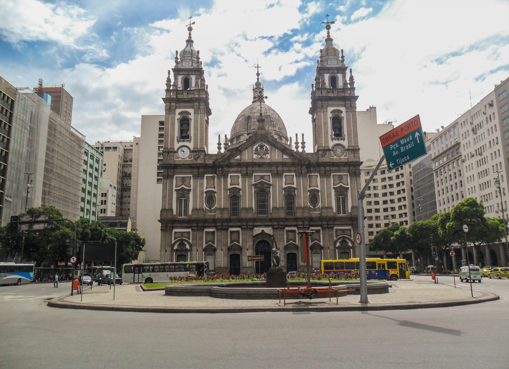
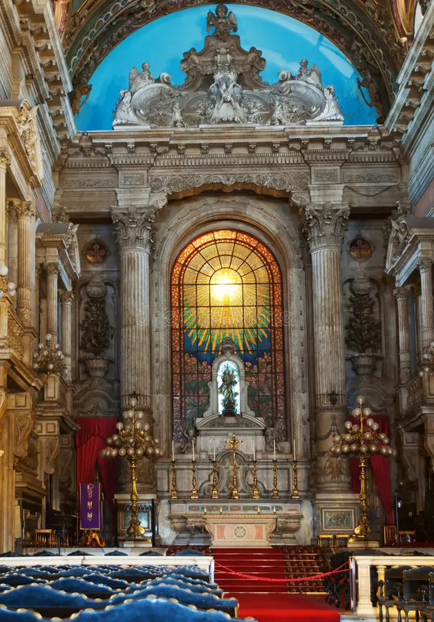

Ponto Turístico no rio de janeiro: Igreja de Nossa Senhora da Candelária
A Igreja de Nossa Senhora da Candelária, no Rio de Janeiro, é uma impressionante obra arquitetônica barroca e neoclássica do século XVII. Além de sua beleza, é conhecida por sua importância histórica e espiritual, atraindo visitantes do mundo todo para apreciar sua beleza e aprender sobre a história do Brasil.

